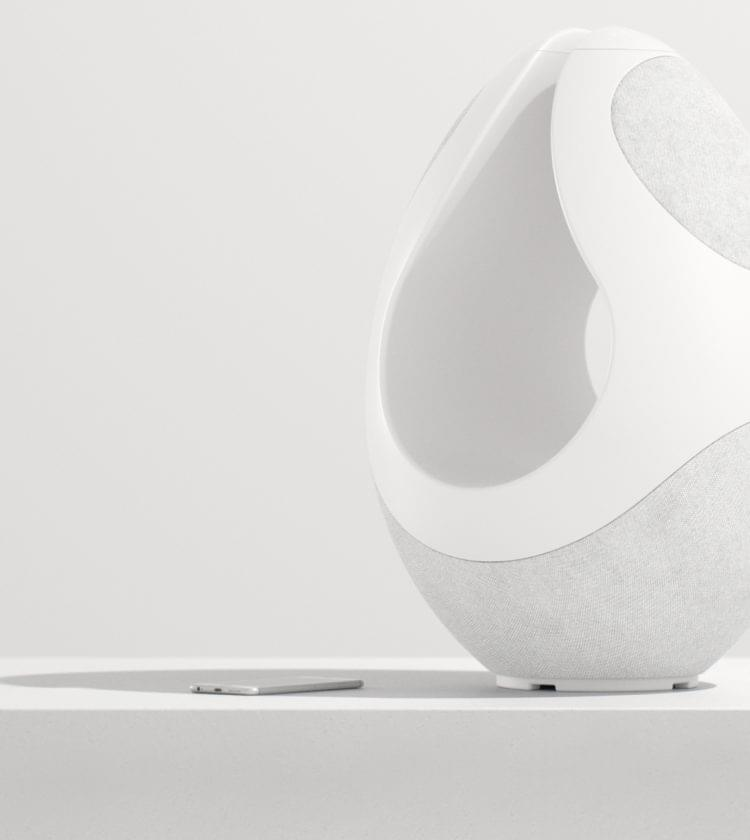
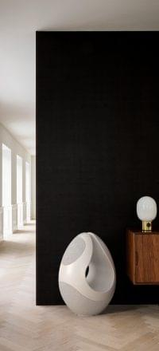

Designed To Be Seen & Felt
Immerse yourself in sound. Visually striking, the Pantheone I speaker is as ingenious as it is beautiful, filling a space with perfect acoustics whilst simultaneously co-existing with its surroundings.

Harmony In Every Line & Curve
Driven to design a state-of-the-art sound system that is aesthetically arresting without compromising on quality or performance, the Pantheone I speakers is at home in an art gallery or in the personal spaces of those who appreciate flawless function.
Our products are designed by a team who share an uncompromising commitment to hand-crafted quality, design and engineering that breathes music into any living space. Made to be enjoyed by those who share a passion for minimalist aesthetic that is both functional and appealing.